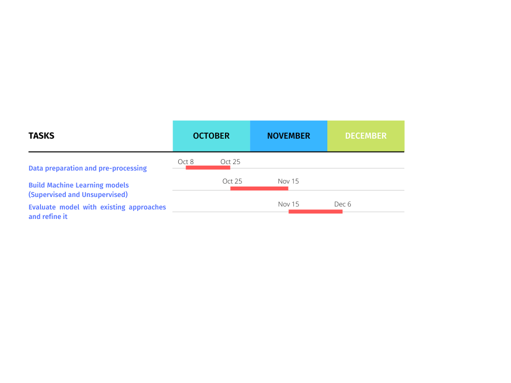
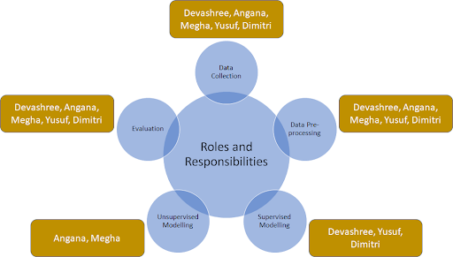

CS7641 - Project Team 17
Introduction/Background
At present, the visually impaired people use a simple stick for navigation. However, the use of such a stick does not enable them to navigate independently. If they ever get into an unknown environment, the most that they can do, without any external help, is detect stationary obstacles around them. Unfortunately, they cannot make any decision based on a comprehensive understanding of the environment.
To address this problem, we intend to develop a Machine Learning model for generating accurate visual understanding of a given scene. A model of this kind can potentially be integrated into an e-stick which assists the visually impaired and enables them to move with the same ease and confidence as normally sighted people.
Problem Definition
Our project aims at developing a software framework that can detect objects from images and then answer questions based on the content of those images. From a big picture perspective, this project is a stepping stone towards engineering a system that can capture real-time images to provide high-level contextual information about the surroundings. Combining such a system with a mapping and navigation module and integrating into an e-stick would enable the visually impaired to navigate independently.
Methodology
Datasets
- Object Detection dataset - this dataset consists of images and object categories that the images encompass.
- Questions and Answers dataset - this dataset consists of text based questions. A query will be a question that the visually impaired person will ask to the system, and an answer would be the model provided output.
Machine Learning Checkpoints
- Using supervised algorithms such as CNN, we will build the object detection model to detect objects in the surroundings
- Using unsupervised and semi-supervised algorithms such as vanilla-RNN, LSTM, GRU, we will develop a text detection system to understand the query input.
- We will later build a multi-modal model combining the above models to achieve our goal. We will then perform a comparison of the results of our model with existing state-of-the-art (SOTA) models.
So when integrated into an e-stick, the visually impaired will be providing a speech input to the system, which will be converted into text. Our model will use this text as an input and provide an answer to the query in text, which can then again be converted into a voice-controlled output for the visually impaired to understand.
Project Scope
The speech-to-text or text-to-speech part would not be included in the project.We will also limit the scope of input queries to a predefined set .
Project Results
We aim to develop a system that can potentially make the navigation for a section of population a little better. We aim to build our model by comparing the results of the State of the Art models available today as a benchmark. We foresee the potential of further use of this model for various other navigation applications such as using the developed framework for visual-language navigation for mobile robots.
Proposed Timeline

Responsibilities

References
- Kunja Bihari Swain et. al. Arduino based automated stick guide for a visually impaired person, S.A. Engineering College, Chennai, Tamil Nadu, India, 2014.
- Ashwini B Yadav, et. al., Design and Development of Smart Assistive Device for Visually Impaired People, IEEE International Conference On Recent Trends In Electronics Information Communication Technology, India, May 2016.
- Zeeshan Saquib, et. al.BlinDar: An Invisible Eye for the Blind People, IEEE International Conference On Recent Trends In Electronics Information Communication Technology, India, May 2017.
- Ayat A. Nada et. al.Assistive Infrared Sensor Based Smart Stick for Blind People, Science and Information Conference, London, UK, 2015.
- Nishant Banat James, Ashish Harsola. Navigation aiding stick for visually impaired, International Conference on Green Computing and Internet of Things, May 2015.
- Sunil Kanzariya, Prof. Vishal Vora, “Real Time Video Monitoring System Using Raspberry Pi”, National Conference on Emerging Trends in Computer, Electrical Electronics, 2015.
- Lun Zhang, Stan Z. Li, Xiaotong Yuan and Shiming Xiang, “Real-time Object Classification in Video Surveillance Based on Appearance Learning”, IEEE Conference on Computer Vision and Pattern Recognition,2007.